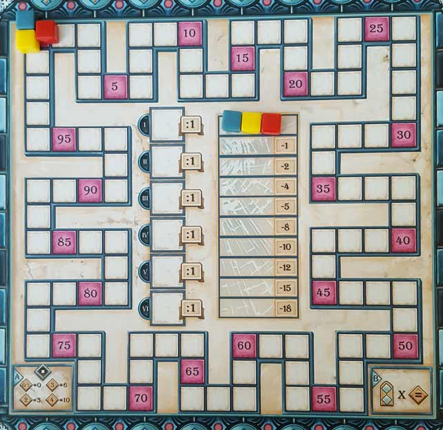

In this Azul: Stained Glass of Sintra review, D and Will break down the follow-up to 2017’s award-winning Azul. Designed by Michael Kiesling and published by Next Move Games, Stained Glass of Sintra has its players taking on the roles of glaziers who are tasked with furnishing a royal palace with colorful, eye-catching stained glass. Throughout the proceedings, players will be drafting and placing window pane tiles on their player boards in such a way that earns them the most points. Is this sequel worthy of its highly praised forerunner? Find out that and more in the review(s) below.
D reviews Azul: Stained Glass of Sintra
 (Author’s
note: this review is meant to accompany our gameplay video and will not
go in-depth on the game’s rules. If you’re interested in learning how
the game is played, please watch the video. It’s not bad.)
(Author’s
note: this review is meant to accompany our gameplay video and will not
go in-depth on the game’s rules. If you’re interested in learning how
the game is played, please watch the video. It’s not bad.)
The original Azul is one of the most acclaimed games of recent years, particularly in the abstract genre, so it came as no surprise that Michael Kiesling and company struck while the iron was hot and released a sequel just a year later. Financially, this makes a lot of sense, but it’s a bit of a risk artistically for Kiesling, who has been on a bit of a roll recently (he also designed Heaven & Ale). And Azul: Stained Glass of Sintra is not a mere expansion, but a completely separate game that shares some core mechanics with the original. To seemingly rush a game out onto store shelves like this might have resulted in a rather disappointing experience, but I’m pleased to announce that I don’t think that’s the case. In fact, I think Sintra almost holds its own against the original, although it’s surely to be more divisive.
Let me quickly get something out of the way: Sintra is not another Sagrada. They’re both abstract games with a stained glass window theme, but that’s about as far as the comparisons go. Well, they’re both good too. But while Sagrada is a bit more of a puzzle game, where you have to figure out how to make all your pieces fit together, Sintra tells you where everything has to go and it’s up to you to execute a plan. It belongs firmly in the Azul family, but it certainly introduces some twists that separate it from its predecessor.
Sintra is likely to catch some flak for being less balanced than Azul, and it’s hard to argue against this point. The player boards in the original game were double-sided, but equal. One side had the same pattern for all players to complete; the other side had a blank pattern that players could fill in however they chose. Either way, everyone was on the exact same playing field in terms of tile necessity. Both games come with 100 tiles spread evenly among five colors. In original Azul, each player would need exactly 25 tiles to fill in their board: five of each of the five colors. In Sintra, there are 80 spaces that can be filled on the pattern strips in some combination of the five colors. There simply aren’t enough tiles to go around, and this, combined with the fact that the pattern strips are placed down randomly at the start of the game, makes the margin for error extremely slim and the luck factor somewhat high. Because of this, I can’t really argue that Sintra is as good of a game as the original, but despite this, I still think it’s a whole lot of fun.
While this more modular playing area and ever-increasing tile scarcity costs the game in terms of balance, I consider it to be a boon when it comes to increasing player interaction. There is some “tile denial” present in the first game, but in Sintra it’s taken to another level. In fact, the opposite is just as likely to occur, where you intentionally don’t take tiles in order to sabotage an opponent who has to take them but has no place to put them. To some, this might be a con instead of a pro, but for me it makes the game more interesting. There are times where I’ll prefer the more dignified approach of the original Azul, but often I’ll be more entertained by the more chaotic and, dare I say, “trashy” nature of Sintra. And that’s not to say it’s a stupid game; in fact, it’s certainly more complex. There are more elements that you need to keep track of, and long-term planning is crucial and justly-rewarded. Of course, being more complex doesn’t mean that it’s better or even deeper, but I think it strikes a nice balance between being heady and fun.
The components for Sintra are perhaps not quite as immediately striking as they were for Azul, but I think they mostly do the job well. The tiles are obviously the main attraction, but as they’re meant to represent glass instead of ceramic tiles, they don’t feature quite the same level of artistry. But they’re solid and vibrant, and altogether do a good job of capturing the necessary stained glass feel. The cardboard pieces are fine, although I’m never a big fan of playing surfaces that are comprised of multiple parts. Everything fits together well enough when it’s brand new, but any warping or damage could make using certain pieces a pain. Visually however, these components are also quite nice. And the rulebook is quite good, explaining everything clearly with useful diagrams when necessary. Overall, the production quality is nothing mind-blowing, but perfectly adequate for the price.
I suspect the general opinion of Azul: Stained Glass of Sintra won’t be quite as favorable as it is for the original. The elements that make this sequel so enjoyable for me are far more subjective than those of the first game. Again, I really wouldn’t argue that this is a better game, but there’s a chance that this is the one we’ll be replaying more often. More than anything, Sintra proves that this system, at its core, is a good one. If Kiesling and Next Move Games release a third Azul game down the line, you can be sure we’ll check it out.
D’s Rating: Four Stars out of Five.
Will reviews Azul: Stained Glass of Sintra
 Azul has
become a favorite of our table and of many others’, judging by fan
reaction online. It was always going to get a sequel, but getting one as
soon as we did was surprising, at least to me. In fact, when I first
read about Azul: Stained Glass of Sintra, I assumed it was an expansion. When I realized that it actually was a
sequel, I was skeptical. Perhaps it’s the movie fan in me, but I kind
of expected this game to be crap at worst or meh at best, since movie
sequels usually are. But board games aren’t movies, and Michael Kiesling
isn’t J.J. Abrams. Stained Glass of Sintra is actually rather good, and in many ways superior to its forebear.
Azul has
become a favorite of our table and of many others’, judging by fan
reaction online. It was always going to get a sequel, but getting one as
soon as we did was surprising, at least to me. In fact, when I first
read about Azul: Stained Glass of Sintra, I assumed it was an expansion. When I realized that it actually was a
sequel, I was skeptical. Perhaps it’s the movie fan in me, but I kind
of expected this game to be crap at worst or meh at best, since movie
sequels usually are. But board games aren’t movies, and Michael Kiesling
isn’t J.J. Abrams. Stained Glass of Sintra is actually rather good, and in many ways superior to its forebear.
Though, one area in which Stained Glass of Sintra falls short of Azul is in its visual appeal and component quality. On one hand, Azul is an absolutely striking board game – its multi-colored tiles and player boards are a sight to behold. On the other, Azul: Stained Glass of Sintra is visually mediocre, at least when comparing it to its predecessor. The tiles in Sintra are colorful, sure, but they’re relatively featureless and unremarkable. The player boards are also somewhat handsome, but they’re also noticeably more unattractive (and less user friendly) than Azul’s version. Don’t even get me started on the scoring board, which I’ll cover more later on. And then there’s the production quality, which is fairly decent, don’t get me wrong. But Azul’s components feel… more expensive. Maybe that’s because they’re better looking and smoother, and it’s possible Sintra costs the same amount to produce. Regardless of the truth, the original Azul looks and feels more substantial.
While it comes up short component-wise, Sintra brings it with its gameplay. The same tile drafting returns from the original game, which helps tie the two games together in a singular lineage. But other than that, almost everything else is noticeably different. For starters, the player boards change as the game goes on. If you complete a column of stained glass, then you flip it over and begin crafting the other side. If you fill up that side, you remove that column from the game entirely and move on to another one. And these columns are arranged randomly at the beginning of the game. All of this means that each and every session of Azul: Stained Glass of Sintra is different because there’s so much variability in the player boards and the patterns they create. This heavily contributes to this game’s replayability factor, which is very high.
That’s not to say that the variability of the player boards doesn’t cause any problems, because it definitely does. While the original Azul embraces its structure and balance, Sintra embraces chaos and randomness. Since the player boards are randomized at the beginning of each session, it’s highly possible that one or more players will start in an unfavorable position, given the variance of the colors of the tiles. Alternatively, it’s also likely that one or more players will immediately find themselves in a favorable position, with the colors they’re seeking being on the factory displays. Though I must commend Kiesling for his design, because even though this randomness creates an imbalance, all of our sessions have ended with relatively close scores. However, the player who fell most behind early on has never come back to win any of our games, and that kind of stinks.
What doesn’t stink at all is the scoring in Stained Glass of Sintra – it’s terrific. Throughout the game, you score whenever you complete a column of stained glass, but you don’t only score that column. No, you also score the other columns to the right of the one you’ve finished, as long as those columns have been completed at least once. This is truly savvy design because it encourages you to fill out lesser columns earlier on in order to earn greater sums of victory points in later rounds. Sure, you could immediately work on your leftmost columns because they’re worth more, but that strategy might cost you in the end. Also, you always have to consider which color nets you bonus points, which changes from round to round. I found myself in a situation where I had three orange and four total tiles in one column, and I could’ve completed that column immediately. But the next round was going to feature orange as its bonus color, so I decided to wait to bank in on those points. In the end, I think that plan might have actually cost me points. Regardless of what strategy you choose, the mental struggle of choosing which column to complete and when is some of my favorite strategy from the past year.
In addition, I also love that Sintra can be so brutal when it comes to losing points. Every time you draw a glass tile that you can’t place, you’re forced to break it (not literally). Broken glass drops you down on a tracker, and the lower you go, the more points you lose at the end of the game. This manifests a mini-game within Sintra, in which you’re always trying to avoid being the person who has to take a boatload of one color, sometimes even as many as six or seven at a time. And when someone other than you draws those tiles, it feels so, so good. Thank goodness you don’t have to lose points in the moment though, as the score tracker for Sintra is garbage. Why they decided to have it weave and wind around the edge of the board is beyond me, and the fact that they didn’t number each individual scoring space only exacerbates my negatives feelings towards it. It almost feels like an afterthought, and perhaps it was given how quickly this game came to market.
When we we’re closing out one of our sessions of Azul: Stained Glass of Sintra, I came to realize that the whole experience felt more like a sprint, whereas Azul always felt like a breezy jog. Perhaps that’s because of the way you do the scoring. Or maybe it’s because Sintra does move a bit quicker than its predecessor. For me personally, I always prefer a sprint to a jog (in board gaming; not in real life), and maybe that’s why I prefer Stained Glass of Sintra to Azul. Indeed, I am disappointed that Sintra’s components and art style left me wanting. But for the most part, the gameplay is better, and dare I say, more fun than Azul’s. It’s also more random and unbalanced, so many gamers may dislike that part. Still, I recommend this game to anyone who enjoyed the first one. It’s a pretty impressive sequel, and going in, I didn’t expect to say that.
I give Azul: Stained Glass of Sintra a: B
Azul: Stained Glass of Sintra – Board Crazy’s Ratings

Leave a Reply
You must be logged in to post a comment.